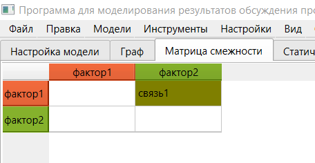

1. Building an FCM from the adjacency matrix is performed on the adjacency matrix tab. To switch to this tab from another tab, click the "Adjacency matrix" header.

2. Note that after configuring the FCM on the graph-based construction tab, the FCM structure is also displayed on this tab.
3. This tab is intended for convenient weight creation. A weight can be created by left-clicking the corresponding empty white cell. The concept used as the row header is the concept from which the weight originates. The concept used as the column header is the concept into which the weight enters. After clicking the cell, weight creation proceeds similarly to the graph area. When the result is applied, the cell is filled with the color corresponding to the selected weight term.
4. Left-clicking a filled cell opens weight editing with behavior similar to weight editing in the graph area.
5. This tab is not intended for creating concepts. Concepts can only be created on the graph tab.
6. Left-clicking a concept header opens concept editing with behavior similar to concept editing in the graph area.